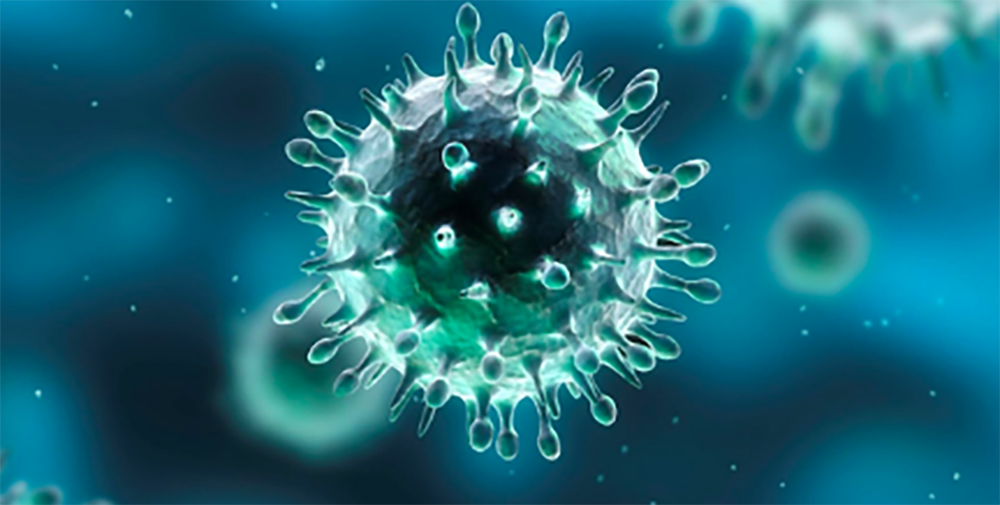
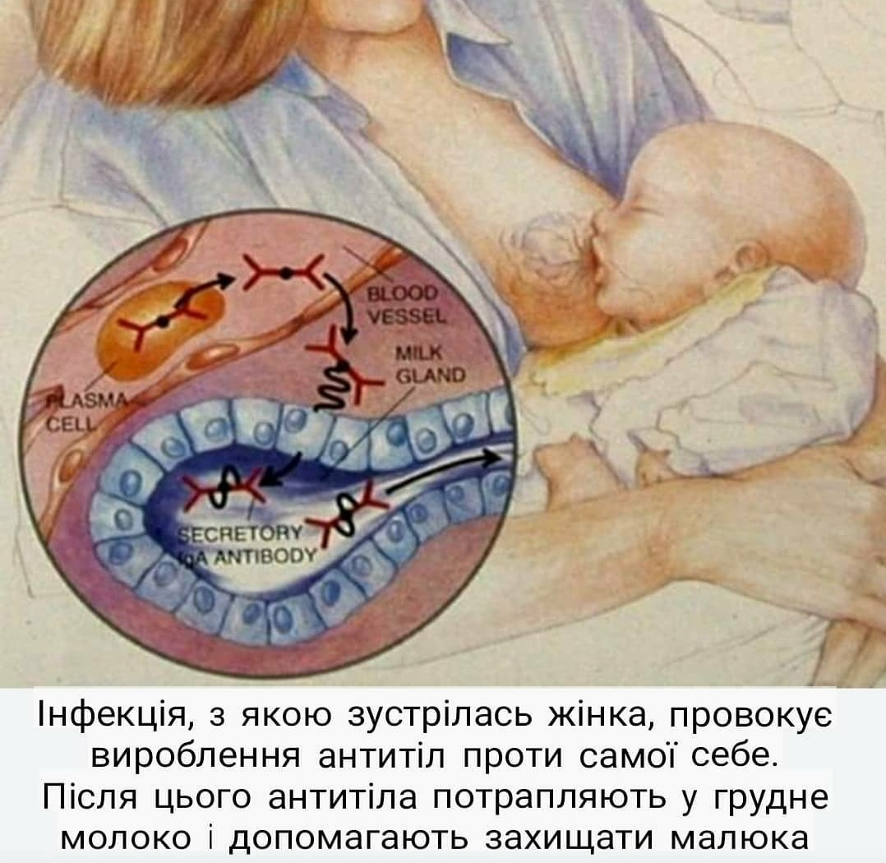
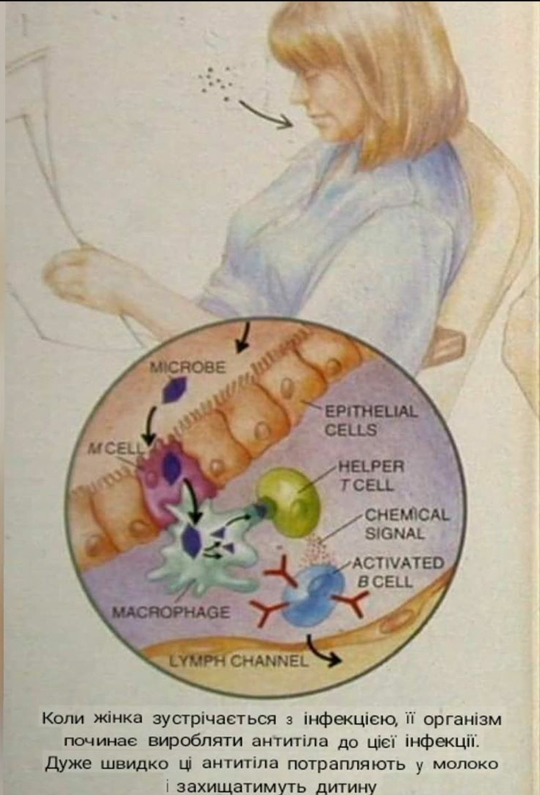
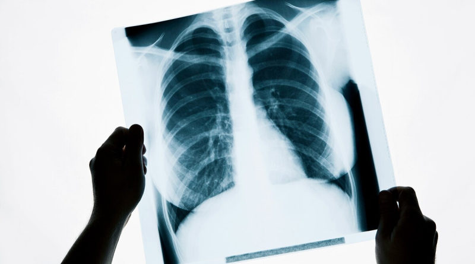

COVID-19 і грудне вигодовування
Updated: Jul 2, 2021

Так, розумію, що новий вірус лякає, бо він ще не досліджений, тому простіше сказати, що годувати грудьми не можна…
Як каже Джек Ньюман: "Окрім того, що він є "новим", у цьому вірусі немає нічого особливого. Такі ж принципи застосовуються, як і для інших вірусів. Грудне вигодовування повинно тривати! Матері та малюки проводять час РАЗОМ. Вони піддаються впливу вірусів та інших збудників РАЗОМ. Коли мама чи дитина не піддаються впливу вірусу, перед початком симптомів настає інкубаційний період. Іншими словами, мати чи дитина вже заразні, не знаючи, що вони хворі або почуваються хворими. І грудне молоко з його десятками, якщо не сотнями імунних факторів (а не лише антитіл) є захистом дитини".
ВООЗ та Ла Лече Ліга рекомендують продовжувати грудне вигодовування, дотримуючись правил гігієни:
- ретельне миття рук,
- носіння захисної маски для запобігання поширенню вірусу.
Як годування грудьми захищає дитину?
Більшість інфекційних хвороб (як бактеріальних, так і вірусних), найбільш заразна до початку появи симптомів захворювання, і навіть до усвідомлення, що жінка контактувала з інфікованою людиною. Тобто дитина на ГВ контактує з бактеріями чи вірусами протягом кількох днів (або й тижнів) до моменту, коли з’являться симптоми хвороби у матері, або з’явиться лихоманка, або навіть до усвідомлення, що вона контактувала з інфекцією.
Більшість вірусів проходить так звану стадію “віремії”, коли вірус потрапляє до кровотоку і, теоретично, може потрапити до грудного молока. Ця стадія розпочинається невдовзі після інфікування і триває, зазвичай, близько кількох годин. Віремія (наявність вірусів у крові) є ДО розуміння жінкою інфекційного контакту. Тобто припинення ГВ, коли жінка вже захворіла (проявилися симптоми), залишає дитину без захисту саме тоді, коли вона НАЙБІЛЬШЕ ТОГО потребує.

Грудне молоко містить антитіла. Навіть, якщо жінка здорова! Якщо вона контактує з інфекцією, починають вироблятися НОВІ, специфічні до неї антитіла.
Як вони працюють? Коли жінка має контакт з бактеріями чи вірусами, вони контактують з її спеціальними М-клітинами, які розташовані у стінці кишківника. Ці клітини не схожі на інші клітини кишківника, які намагаються воювати з мікробами. Вони “навмисно” поглинають бактерію чи вірус. У підслизовому шарі кишківника інформація про мікроб/вірус/бактерію/гриб передається певній кількості клітин, які там розташовані. Окремий вид клітин, В-лімфоцити, змінюється після отримання інформації. Ці В-лімфоцити потрапляють до лімфи і протягом 24 год перетворюються у клітини плазми, які виробляють антитіла до специфічного мікроба, який спричинив інфекцію.

Антитіла потрапляють до грудного молока і допомагають захистити дитину саме від того мікроба, з яким контактувала жінка. І це трапляється до початку хвороби у жінки. І саме контакт з мікробом запускає цей процес! Жінка не обов’язково має захворіти, щоб це сталося.
Тут може бути багато незрозумілих термінів, але вони важливі. Грудне молоко має багато імунних речовин (лактоферин, лізоцим, імуноглобуліни…), які допомагають дитині у боротьбі з мікробами, з якими вона контактувала. Антитіла та інші сполуки формують бар’єр слизових оболонок, що унеможливлює потрапляння мікробів до організму дитини. Бар’єр запобігає потрапляння бактерій та вірусів до організму дитини. Він є важливим інструментом захисту дитини від інфекційних збудників.
Згідно досліджень, у молоці матерів, що перехворіли на COVID-19, виявлена суттєва кількість антитіл до SARS-CoV-2. Переважно це секреторний імуноглобулін А, клас антитіл, що захищає слизові оболонки - вхідні ворота інфекцій. Ці антитіла стійкі до перетравлення і здатні довго працювати в організмі.
Дивно було б, якби їх там не знайшли. Потужна, відшліфована мільйонами років еволюції, система працює.
Ще один респіраторний вірус - ну ок, скільки там їх вже було. Нагадаю, що під час грудного вигодовування йде постійний процес актуалізації захисту: мама стикається з вірусами і бактеріями в оточенні своєму і дитини, її імунна система "опрацьовує" їх, деякі активовані імунні клітини активно рухаються до молочної залози (ммм, "a homing of B-cells to mammary gland", як мило написано в статті: як ті поштові голубки) і там виробляють антитіла для малятка - саме ті, що зараз потрібні. Крім того, в материнському молоці є інші потужні системи захисту дитини, ті, які підвищують загальну стійкість до інфекцій, прямо вбивають бактерії та інактивують віруси, знижують запалення, прискорюють загоєння пошкоджень.
Нагадаю про важливість підтримки матерів, що годують, медичною системою та суспільством. Похваліть знайому жінку, що годує, скажіть, яка вона молодець. Не надаючи жінці підтримку - ви граєте на боці ковідки, ось так.
Чи боятися лікування? Які особливості для матусь, що годують грудьми?
На жаль, статистика поширення нового вірусу невтішна. В дірект все частіше приходять повідомлення, що лікарі рекомендують завершувати ГВ, оскільки лікування “потужне”. Трактувати “потужне” можна ой як по-різному, але зараз не про це.
Ми разом із сімейним лікарем та консультантом з ГВ Алина Волковская вирішили розвіяти міфи, опираючись на протоколи.

У разі підозри на коронавірус лікар збирає анамнез захворювання, проводить загальний огляд, пульсоксиметрію. Призначає тест ПЛР на коронавірус. Якщо є підозра на пневмонію (утруднення дихання, біль у грудній клітці, кашель та підвищення t тіла), додатково може бути рекомендовано:
- КТ (комп’ютерну томографію) чи рентген органів грудної клітки.
- Загальний аналіз крові/С-реактивний білок.
Ці процедури повністю сумісні з ГВ і не потребують жодних зціджувань чи відтермінування годувань.
Пам'ятайте: специфічного лікування COVID-19 не існує!
І не займайтеся самолікуванням.
Згідно інформації на сайті Державного експертного центру МОЗ України covid19.dec.gov.ua при виявленні коронавірусу можуть використовуватися наступні лікарські засоби.
Жарознижуючі:
- ібупрофен (сумісний з гв),
- парацетамол (сумісний з гв).
Противірусні (для лікування тільки важких випадків!), які проходять клінічні випробування:
- ремдесивір (експериментальне використання, не знайдено даних про його виведення з грудним молоком),
- фавіпіравір (немає на сайті),
- лопінавір/ритонавір (сумісні з гв).
Як бачите, тут немає жодних розрекламованих: феронів і флазидів
Антибіотики - лише для лікування ускладнень:
- ампіцилін (сумісний з гв),
- амоксицилін/клавуланова кислота (сумісні з гв),
- цефтріаксон (сумісний з гв),
- азитроміцин (сумісний з гв),
- кларитроміцин (сумісний з гв),
- доксициклін (помірно безпечний),
- моксифлоксацин (рекомендована заміна на безпечніші альтернативи).
ВООЗ попереджає, що антибіотики не працюють проти вірусів, лише проти бактерій!
Ліки при супутніх неінфекційних захворюваннях підбираються індивідуально.

Лікування COVID-19 симптоматичне, як при ГРВІ:
- Зволоження та провітрювання приміщення (t 18-20°C, вологість 50-70%);
- Рясне пиття, їсти при наявності апетиту;
- Постільний режим;
- Вологе прибирання (щоб рідні не розслаблялися), адже вірус розповсюджується при кашлі/чханні, осідаючи на поверхнях;
- Сольовий розчин в ніс;
- Жарознижуючі: парацетамол/ібупрофен.
Пам’ятайте, що всі препарати завжди можна перевірити за діючою речовиною на сайті e-lactancia.org.
Міцного Вам здоров’я!
П.С. Для статті використана інформація з книги Джека Ньюмена “Грудне вигодовування”, допис Вікторії Нестерової, допис gv_moms, допис gv_moms, допис Zoryana Matsyakh